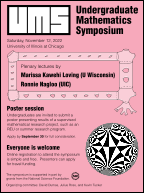

Undergraduate Mathematics Symposium
Saturday, November 12, 2022
University of Illinois at Chicago
Organized by Emily Dumas, Julius Ross, and Kevin Tucker
This page is about the
2022 symposium.
For the latest symposium information see the UMS home page.
About the symposium
The Undergraduate Mathematics Symposium at UIC is an annual one-day
meeting focusing on undergraduate mathematical research and
education. The meeting features plenary lectures by mathematical
researchers and a poster session where students present results from undergraduate mathematical research projects.

Download the symposium poster
After running as an online conference in 2020 and 2021, we are pleased to announce that the 2022 UMS will be held in person on the UIC campus. It will also be possible to attend the plenary lectures remotely, using a zoom link that will be provided to registered participants; however, it will not be possible to participate in the poster session remotely.
Plenary speakers
- Marissa Kawehi Loving (U Wisconsin)
On automorphisms of the k-curve graph and building mathematical collaborations
Abstract:
One of my favorite parts of being a mathematician is doing math with others, but the process of mathematical collaboration is often shrouded in mystery. How are new collaborations formed? How are they sustained? How do you make sure your collaborations are healthy and nourishing? In this talk, I'll share some of the ways my research collaborations have come to be, starting with a project that kicked off during the 2018 Summer@ICERM undergraduate research program.
- Ronnie Nagloo (UIC)
Fun with transcendental numbers and functions
Abstract:
A real or complex number is said to be algebraic if it is a solution of an equation F(x)=0, where F is a polynomial in one variable with rational coefficient. For example, √2 is algebraic since it is a solution of x2-2=0. On the other hand, a real or complex number is said to transcendental, if it is not algebraic. The most famous examples of such are e and π. Even though nearly all real and complex numbers are transcendental, very few numbers have been proven to be transcendental. This talk will be an excursion in the field of transcendental numbers as well as their counterparts in the world of functions.
Schedule and locations
The symposium is held on UIC's east campus. Sign-in, plenary lectures, and lunch will be in the Science and Engineering Offices (SEO) building. The poster sessions will be in the Math and Science Learning Center (MSLC) which is located on the third floor of the Science and Engineering South (SES) building.
The schedule of events is shown below:
| Saturday, November 12 |
| Time | Event | Location |
| 9:00 - 9:30am |
Sign-in and coffee |
SEO 300 |
| 9:30am |
Ronnie Nagloo - Fun with transcendental numbers and functions |
SEO 636 |
| 10:45am |
Morning poster session |
MSLC room in SES |
| 12:00pm |
Lunch |
SEO 300 |
| 1:30pm |
Marissa Kawehi Loving - On automorphisms of the k-curve graph and building mathematical collaborations |
SEO 636 |
| 2:45pm |
Afternoon poster session |
MSLC room in SES |
| 4:00pm |
Symposium ends |
Diversity statement
The UMS values diversity and inclusion. Regardless of age, disability, ethnicity, race, gender, gender identity, sexual orientation, socioeconomic status, geographic background, religion, political ideology, language, or culture, we expect all members of this conference to contribute to a respectful, welcoming, and inclusive environment for every other participant. Be mindful of different cultural and linguistic backgrounds, as well as different political ideologies and religious beliefs.
Any instance of a participant not adhering to this standard should be reported to one of the organizers. Those who do not adhere will be removed from the symposium without the possibility of appeal.
Acknowledgment
UMS is supported in part by the following grants from the National Science Foundation: NSF RTG 2037569, DMS 1348092 CAREER.